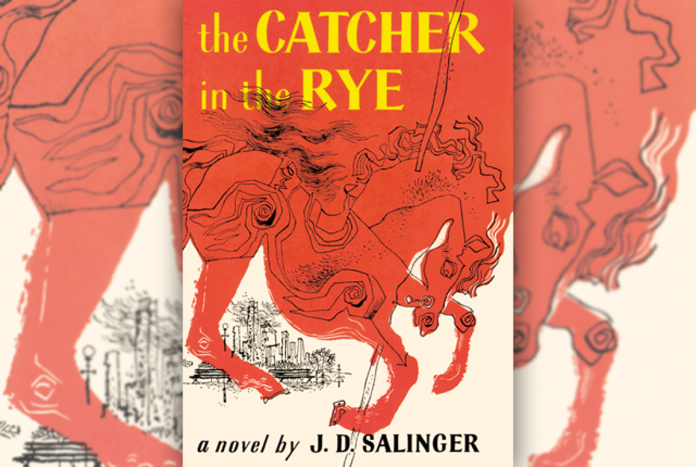

Back to Home
My favorite Book: The Catcher in the Rye
5 Sentence Summary:
J.D. Salinger described his work The Catcher in the Rye as a novel about “an individual’s alienation in a heartless world.” Holden, the main character, seems only to connect with children younger than himself, those who have not yet been scarred or corrupted by the heartless world around them. He increasingly isolates himself by finding fault with others (everyone is a “phony”), getting tossed out of boarding school after school, ruining every chance he has to establish a romantic relationship, and voicing his paranoia and disdain about the world to anyone who will listen. This narrative gives readers a look into the mind of a character whose world is crumbling around him, and his crumbling with it, along with giving voice to the impact and symptoms of mental illness. Holden’s breakdown highlights the importance of getting the necessary help for children who are dealing with grief.
Main Characters
Holden Caulfield: The protagonist and narrator of the novel, Holden is a sixteen-year-old junior who has just been expelled for academic failure from a school called Pencey Prep. Although he is intelligent and sensitive, Holden narrates in a cynical and jaded voice. He finds the hypocrisy and ugliness of the world around him almost unbearable, and through his cynicism he tries to protect himself from the pain and disappointment of the adult world. However, the criticisms that Holden aims at people around him are also aimed at himself. He is uncomfortable with his own weaknesses, and at times displays as much phoniness, meanness, and superficiality as anyone else in the book. As the novel opens, Holden stands poised on the cliff separating childhood from adulthood. His inability to successfully negotiate the chasm leaves him on the verge of emotional collapse.
Ackley: Holden’s next-door neighbor in his dorm at Pencey Prep. Ackley is a pimply, insecure boy with terrible dental hygiene. He often barges into Holden’s room and acts completely oblivious to Holden’s hints that he should leave. Holden believes that Ackley makes up elaborate lies about his sexual experience.
Stradlater: Holden’s roommate at Pencey Prep. Stradlater is handsome, self-satisfied, and popular, but Holden calls him a “secret slob,” because he appears well groomed, but his toiletries, such as his razor, are disgustingly unclean. Stradlater is sexually active and quite experienced for a prep school student, which is why Holden also calls him a “sexy bastard.”
Jane Gallagher: A girl with whom Holden spent a lot of time one summer, when their families stayed in neighboring summer houses in Maine. Jane never actually appears in The Catcher in the Rye, but she is extremely important to Holden, because she is one of the few girls whom he both respects and finds attractive.
Phoebe Caulfield: Phoebe is Holden’s ten-year-old sister, whom he loves dearly. Although she is six years younger than Holden, she listens to what he says and understands him more than most other people do. Phoebe is intelligent, neat, and a wonderful dancer, and her childish innocence is one of Holden’s only consistent sources of happiness throughout the novel. At times, she exhibits great maturity and even chastises Holden for his immaturity. Like Mr. Antolini, Phoebe seems to recognize that Holden is his own worst enemy.
Allie Caulfield: Holden’s younger brother. Allie dies of leukemia three years before the start of the novel. Allie was a brilliant, friendly, red-headed boy—according to Holden, he was the smartest of the Caulfields. Holden is tormented by Allie’s death and carries around a baseball glove on which Allie used to write poems in green ink.
D. B. Caulfield: Holden’s older brother. D. B. wrote a volume of short stories that Holden admires very much, but Holden feels that D. B. prostitutes his talents by writing for Hollywood movies.
Click the photo below for its Wiki page:

Personal Testimonial
Despite being written in 1951, I think many teenagers would be able to relate to the various themes present in the book. It is a modern classic of the coming of age genre. I find the main character, 17-year-old Holden Caulfield, absolutely intriguing and as I read the book, it was fascinating to get inside the head of the strange, rebellious protagonist. I think this book expands your horizons on how and what a typical troubled teenager thinks. A small journey to the mind of one messed up but interesting character makes the readers realize that after wandering alone, going home is one essential part of growth.